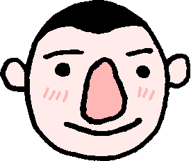

Hello, my name is David Bos and this is my website! The drawing is an artistic rendition of me. The receding hairline is accurate, but my nose is not actually that big in real life. It's even bigger.
I like video games, visual art, programming, puzzles and everything in between. Programming-wise my interests are mainly graphics- and game programming, compilers and interpreters, but also programming language design. But really I find almost everything game and computer related interesting 😄